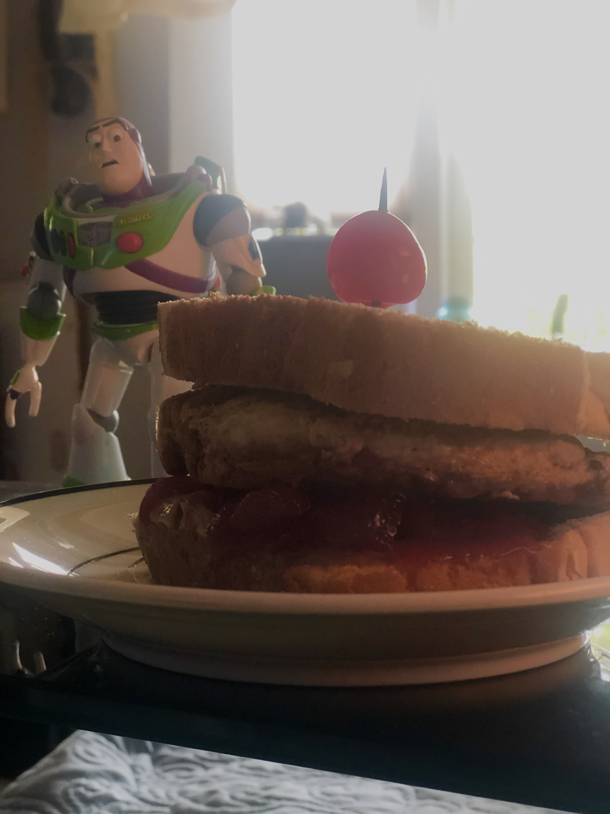

PHASE 1: Mod and Tessle
.jpg)


Assignment 2 : DMANIACS GROUP PROJECT
Benji Norman ; Andy Wu ; Sabrina Chan ; Charles Garciano
Behind The Scenes: Making of Complexus - Phase 1-2: FASTENERS
the idea behind this idea is to create a Fastener using paper amterial or anything that can be best suited for you.
I choice Cardboard since this was the only materail around the house I had a lot of.
The Box I chose to craete my Fastener had subtractive and additive indents which made my idea come together smoothly.



Phase 3 - 7 : Making Our Ideas Possible

a group effort in putting my idea for the fastener to create a tesselation piece where modular shapes ( created by each individual of our group) connect to one another.
we decided to use wood for our material of fasterners and go through the laser cut process at san jose state art dept.

above are the following instructions for the game we have createed tessealation pieces cut (below)


we decided as a group to paint the shapes using four diffferent colors. The two provided (below) are some examples how wwe painted the objects using acrylic paint.


COMPLETED Phase 8

Finshed product of Complexus